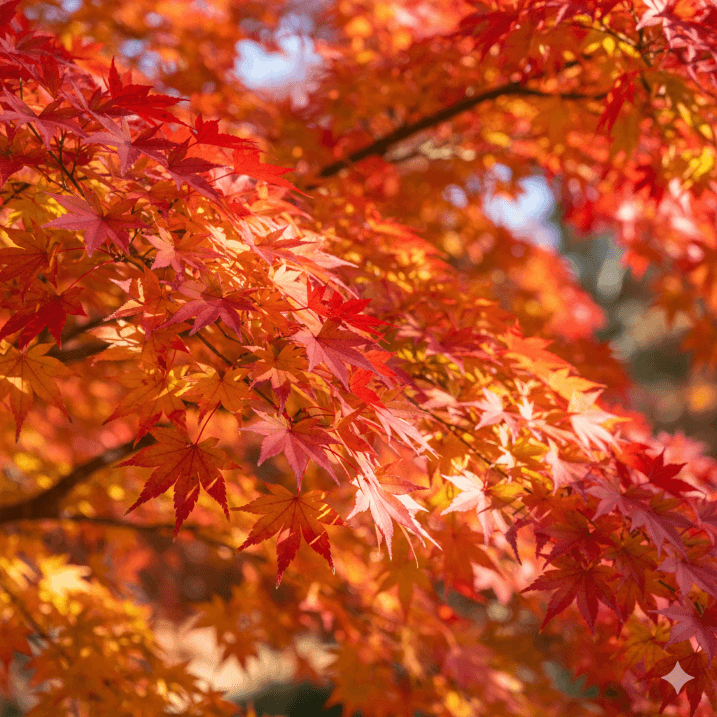
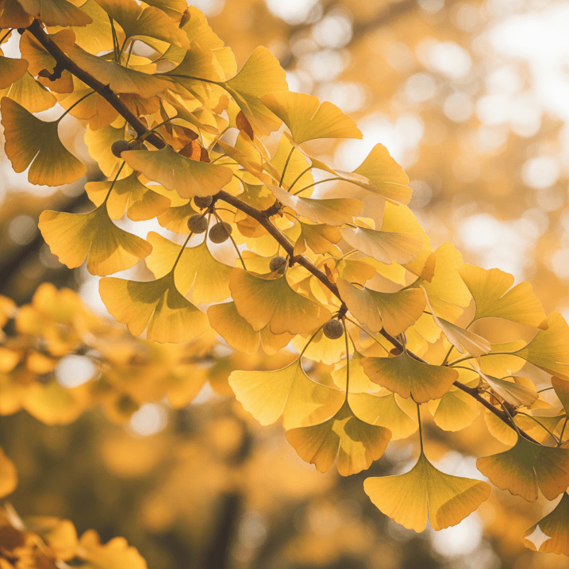
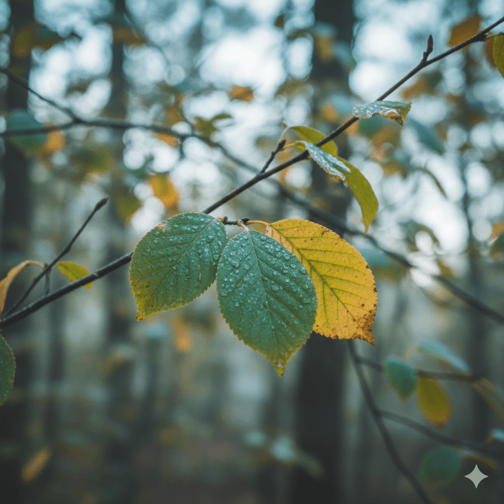

Some trees can live a very long time.The oldest verified individual trees are Great Basin bristlecone pines in the White Mountains of California.
A bristlecone pine was verified to be over 4,850 years old. Another bristlecone pine that was accidentally cut down in 1964 was later determined to be 4,960 years old.
A Patagonian cypress in Chile recently estimated to be roughly 5,400 years old, though this age is still being debated among scientists.
There is a Norway Spruce in Sweden with a root system dated to 9,550 years old, though the individual trunk visible today is much younger.


